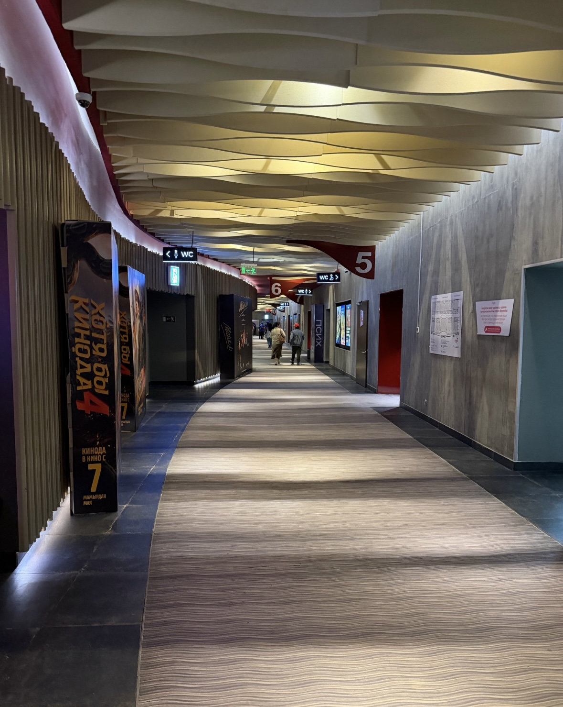

Cinema Experience
Chaplin Mega Silk Way offers comfortable cinema halls equipped with cozy seats, large screens, and high-quality sound systems.
You can choose from different types of cinema halls and watch new releases in a comfortable environment.
Chaplin Mega Silk Way
About the Cinema Contact information
Chaplin Mega Silk Way is a modern cinema located in the MEGA Silk Way shopping and entertainment center in Astana. It offers visitors a comfortable environment and a selection of films for different audiences
The cinema offers a diverse film program for all age groups, as well as top-tier amenities, including a bar and automated ticketing services.

Chaplin Mega Silk Way offers comfortable cinema halls equipped with cozy seats, large screens, and high-quality sound systems.
You can choose from different types of cinema halls and watch new releases in a comfortable environment.
Chaplin Mega Silk Way offers several types of cinema halls and seating options for visitors. The cinema shows new releases in different genres and age categories.
Visitors can choose between standard and premium seating depending on the selected hall and movie session.
Some movies have age restrictions such as 12+, 16+ and 18+. Visitors should check the age rating before purchasing a ticket
Available movies and screening times may change
Chaplin Mega Silk Way
Astana, Kazakhstan
Qabanbay Batyr Avenue 62
MEGA Silk Way, 2nd floor
More information and current movie schedule are available on the official Chaplin Cinemas website